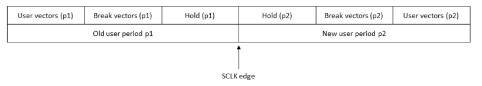

Changing the timing set (CTIM)
The CTIM (Change TIMing) instruction allows you to change the timing set during a test by specifying a new timing set number. When changing the timing you must consider the information given in System preparation by firmware commands. Note also that the system automatically closes any open compare windows before the CTIM instruction is executed.
Every timing set change is associated with a so-called CTOF (Change Timing On the Fly) sequence, which is roughly sketched in the following graphic:

During the Hold (p1) and Hold (p2) blocks, the inputs to the DUT are static, that is, they are held at the levels that were current at the end of the block of unlogged break cycles.
The total time of the CTOF sequence mainly depends on p1 and p2. The details for the individual blocks are given in the following list. Note that the unit for the time spans p1, p2, SCLK_period and clock_resolution is nanoseconds, and that the block lengths are the same unless otherwise indicated:
- The Break vectors (p1) block consists of two parts:
- If the number of user cycles before the CTIM instruction is not exactly divisible by 8, up to seven logged break cycles are generated after the CTIM instruction has been issued. These break cycles are inserted immediately after the last user cycle, and they still have the length p1.
- These logged break cycles are followed by a block of approximately 560 unlogged break cycles, which are also generated with length p1.
- The length of the Hold (p1) block is approximately 18 * p1 + (3.5 +
m) * SCLK_period. The variable m
depends on the following conditions:
- There is more than one sequencing group in the primary setup. For more information see Synchronizing vectors in a multi-port setup.
- There is more than one site, and the site match function is either unconditionally active
(ON option of the STME command), or it is conditionally
active (AUTO option of the STME command) and the
conditions are satisfied. For more information see Controlling the site match function.
If at least one of these two conditions is satisfied, then m = number_of_sequencing_groups * number_of_sites; otherwise, m = 0. You can query the SCLK period with the SCLK? firmware query.
- The length of the Hold (p2) block, which is based on the new timing set, is approximately ((floor(32 / n) + 1) * 2 + 7) * p2, where n is the integer such that n = p2 / clock_resolution. You can query the clock resolution with the CLKR? EXACT firmware query.
- The length of the Break vectors (p2) block is different for Smart Scale and Pin Scale. For Smart Scale, it is approximately (max(ceiling(63,2 / p2), 2) * 8 + 82 + 160) * p2.
The approximate total length of the CTOF sequence for Smart Scale therefore is (without the padding vectors in Break vectors (p1)):
[560 * p1] + [18 * p1 + (3.5 + m) * SCLK_period] + [((floor(32 / n) + 1) * 2 + 7) * p2] + [(max(ceiling(63,2 / p2), 2) * 8 + 82 + 160) * p2]
Example
The example:
SQPG 0,STVA,0,,(@) .... SQPG 4,CTIM,2,,(@) SQPG 5,GENV,400,,(@) SQPG 6,CTIM,1,,(@) SQPG 7,GENV,200,,(@) SQPG 8,STOP,,,(@)
changes the timing to set 2 at the start of the test before the device is initialized. At the end of vector 400 the timing is changed to set 1.
For binning tests, the CTIM instruction allows you to change to the primary timing set as shown in the following listing:
SQPG 0,STVA,0,,(@) SQPG 1,STSA,,,(@) .... SQPG 4,CTIM,2,,(@) SQPG 5,GENV,400,,(@) SQPG 6,CTIM,PRM,,(@) SQPG 7,GENV,200,,(@) SQPG 8,STOP,,,(@)
Each time you execute a functional test with this test sequence, the timing is changed to the primary timing set. If you use the SPRM command to change the primary set for each test run, you can repeat the test and vary the parameters without changing your setup.
Functional changes
- Introduced before SmarTest 6.3.2